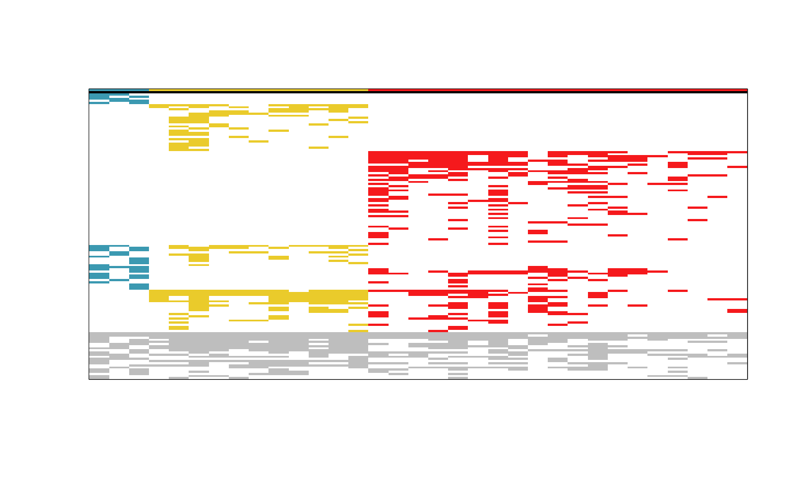

Rearrange a phytosociological table, showing differential taxa on top
Source:R/tabulation.R
tabulation.RdThis function reorders a phytosociological table rows using, firstly, the
increasing number of groups in which a taxon occurs, and secondly, the
decreasing sum of the inner frequency of presences of each taxon
(see tdv()). The columns are also reordered, simply using the increasing
number of the respective group membership.
Usage
tabulation(
m_bin,
p,
taxa_names,
plot_im = NULL,
palette = "Vik",
greyout = TRUE,
greyout_colour = "grey"
)Arguments
- m_bin
A matrix. A phytosociological table of 0s (absences) and 1s (presences), where rows correspond to taxa and columns correspond to relevés.
- p
A vector of integer numbers with the partition of the relevés (i.e., a k-partition, consisting in a vector with values from 1 to k, with length equal to the number of columns of
m_bin, ascribing each relevé to one of the k groups).- taxa_names
A character vector (with length equal to the number of rows of
m_bin) with the taxa names.- plot_im
By default,
NULL, returns without plotting. Ifplot_im = "normal", plots an image of the tabulated matrix. Ifplot_im = "condensed", plots an image of the tabulated matrix but presenting sets of differential taxa as solid coloured blocks.- palette
A character with the name of the colour palette (one of
grDevices::hcl.pals()to be passed togrDevices::hcl.colors(). Defaults to "Vik".- greyout
A logical. If
TRUE(the default), non-differential taxa are greyed out (using the colour defined bygreyout_colour). IfFALSE, non-differential taxa is depicted with the respective group colours.- greyout_colour
A character with the name of the colour to use for non-differential taxa. Defaults to "grey".
Value
If plot_im = NULL, a list with the following components:
- taxa.names
The given
taxa_names- taxa.ord
A vector with the order of the rows/taxa.
- tabulated
The rearranged/reordered
m_binmatrix.- condensed
The matrix used to create the "condensed" image.
If plot_im = "normal", it returns the above list and, additionally, plots
an image of the tabulated matrix.
If plot_im = "condensed", it returns the above list and, additionally,
plots an image of the tabulated matrix, but presenting the sets of
differential taxa as solid coloured blocks of equal width.
Details
The function accepts a phytosociological table (m_bin), a
k-partition of its columns (p) and the names of the taxa (corresponding
to the rows of m_bin), returning a rearranged/reordered matrix (and
plotting optionally).
Author
Tiago Monteiro-Henriques. E-mail: tmh.dev@icloud.com.
Examples
# Getting the Taxus baccata forests data set
data(taxus_bin)
# Creating a group partition, as presented in the original article of the
# data set
groups <- rep(c(1, 2, 3), c(3, 11, 19))
# Removing taxa occurring in only one relevé in order to
# reproduce exactly the example in the original article of the data set
taxus_bin_wmt <- taxus_bin[rowSums(taxus_bin) > 1, ]
# Sorting the phytosociological table, putting exclusive taxa in the top and
# plotting an image of it
tabul <- tabulation(
m_bin = taxus_bin_wmt,
p = groups,
taxa_names = rownames(taxus_bin_wmt),
plot_im = "normal",
palette = "Zissou 1"
)

# Inspect the first rows and columns of the reordered phytosociological table
head(tabul$tabulated, n = c(5, 5))
#> 1 2 3 4 5
#> group 1 1 1 2 2
#> Galium aparine L. 1 1 0 0 0
#> Genista florida L. 1 0 1 0 0
#> Geranium lucidum L. 1 1 0 0 0
#> Phalacrocarpum oppositifolium (Brot.) Willk. 0 1 1 0 0